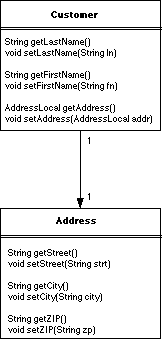
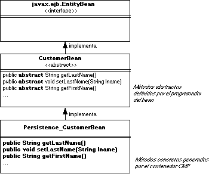

Como hemos visto en el tema anterior, en los beans de entidad con persistencia gestionada por el bean hay que declarar en el código fuente del bean:
SELECT, INSERT,
UPDATE sobre la tabla de la base de datos que guarda la información
del bean
En este tema describiremos los beans de entidad con persistencia gestionada
por el contenedor. En ellos todas las funciones que antes había que codificar
se definen de forma declarativa en el fichero de descripción del despliegue
del bean. Veremos dos ejemplos -Customer y Address-
con los que explicaremos cómo se definen los beans con persistencia gestionada
por el contenedor y cómo funcionan en tiempo de ejecución. Veremos
en el tema siguiente la definición de relaciones entre beans, que también
son gestionadas automáticamente por el contenedor.
La persistencia gestionada por el contenedor se ha introducido en la especificación 2.0 de la arquitectura EJB. En la literatura en inglés se suele referir a ella como CMP 2.0 (Container Managed Persistence).
En CMP 2.0 el contenedor gestiona automáticamente el estado de los beans de entidad. El contenedor se encarga de las transacciones y de la comunicación con la base de datos. El desarrollador del bean describe los atributos y las relaciones de un bean de entidad usando campos de persistencia virtuales y campos de relación. Se llaman campos virtuales porque el desarrollador no declara estos campos explícitamente, sino que se definen métodos abstractos de acceso (get y set) en la clase bean de entidad. La implementación de estos métodos se genera en tiempo de despliegue por las herramientas del servidor de aplicaciones. Es importante recordar que los términos campo de relación y campo de persistencia se refieren a los métodos abstractos de acceso y no a los campos reales declarados en las clases.

En la figura anterior, el EJB Customer tiene seis métodos
de acceso. Los primeros cuatro leen y actualizan los apellidos y el nombre del
cliente. Estos son ejemplos de campos de persistencia: atributos directos del
bean de entidad. Los últimos dos son métodos de acceso que obtienen
y definen referencias al EJB Address a través de su interfaz
local, AddressLocal. Este es un ejemplo de un campo de relación
llamado address.
Las clases bean de entidad en CMP 2.0 se definen usando métodos de acceso que representan campos virtuales de relación y de persistencia. Como se ha mencionando antes, los campos reales no se declaran en las clases bean de entidad. En su lugar, las características de estos campos se describen en detalle en el fichero XML descriptor del despliegue que usa el bean. El esquema abstracto de persistencia es un conjunto de elementos XML que describen los campos de relación y los campos de persistencia. Junto con el modelos abstracto de programación (los métodos abstractos de acceso) y alguna ayuda del desplegador, la herramienta del contenedor tendrá suficiente información para hacer corresponder la entidad y sus relaciones con otros beans en la base de datos.
Una de las responsabilidades del vendedor de las herramientas de despliegue y del contenedor es la generación de implementaciones concretas de los beans de entidad abstractos. Las clases concretas generadas por el contenedor se llaman clases de persistencia. Las instancias de las clases de persistencia son responsables de trabajar con el contenedor para leer y escribir datos entre el bean de entidad y la base de datos en tiempo de ejecución. Una vez que las clases de persistencia se generan, pueden ser desplegadas en el contenedor EJB. El contenedor informa a las instancias de persistencia cuándo deben leer y escribir en la base de datos. Las instancias de persistencia realizan la lectura y escritura de una forma optimizada para la base de datos que se está usando.
Las clases de persistencia incluirán lógica de acceso a la base de datos adaptada a una base de datos particular. por ejemplo, un producto EJB podría proporcionar un contenedor que pueda hacer corresponder un bean de entidad a una base de datos específica como una base de datos relacional Oracle o la base de datos de objetos POET. Esta especificidad permite a las clases de persistencia emplear optimizaciones personalizadas a bases de datos particulares.
La herramienta del contenedor genera toda la lógica de acceso a la base de datos en tiempo de despliegue y la embebe en las clases de persistencia. Esto significa que los desarrolladores no tienen que escribir la lógica de acceso a la base de datos ellos mismos, lo que ahorra un montón de trabajo; además este mecanismo puede resultar en un mejor rendimiento en los beans de entidad porque la implementación está optimizada. Un desarrollador de bean de entidad nunca tendrá que tratar con el código de acceso a la base de datos si está trabajando con entidades CMP 2.0. De hecho, ni siquiera tendrá acceso a las clases de persistencia que contienen esa lógica, porque se generan de forma automática por la herramienta. En la mayoría de los casos este código fuente no está disponible para los desarrolladores de beans.
Customer En el siguiente ejemplo, desarrollaremos un simple bean de entidad CMP 2.0
- el EJB Customer. Conforme avancemos con el tema, el ejemplo se
hará más complejo para ilustrar los conceptos comentados en cada
sección. Este ejemplo supone que estas usando una base de datos relacional.
Necesitaremos una tabla llamada CUSTOMER a partir de la cual obtener
los datos de clientes. La definición de la tabla se hace en SQL con la
siguiente sentencia:
CREATE TABLE CUSTOMER (ID INT PRIMARY KEY NOT NULL, LAST_NAME CHAR(20), FIRST_NAME CHAR(20))
CustomerBean La clase CustomerBean es una clase abstracta a partir de la cual
la herramienta del contenedor generará una implementación concreta
que se ejecutará en el contenedor EJB. El mecanismo por el que la herramienta
del contenedor genera una clase entidad persistente a partir de la clase bean
de entidad varía, pero la mayoría de fabricantes generan una subclase
del la clase abstracta proporcionada por el desarrollador del bean (ver figura
siguiente).

La clase abstracta del bean debe declarar métodos de acceso (set
y get) para cada campo y relación de persistencia definidos
en el esquema abstracto de persistencia del descriptor de despliegue. La herramienta
del contenedor necesita tanto los métodos abstractos de acceso (definidos
en la clase bean) como los elementos XML del descriptor de despliegue para describir
completamente el esquema de persistencia del bean.
He aquí un definición muy simple de la clase CustomerBean.
import javax.ejb.EntityContext;
public abstract class CustomerBean implements javax.ejb.EntityBean {
public Integer ejbCreate(Integer id){
setId(id);
return null;
}
public void ejbPostCreate(Integer id) {}
// abstract accessor methods
public abstract Integer getId();
public abstract void setId(Integer id);
public abstract String getLastName();
public abstract void setLastName(String lname);
public abstract String getFirstName();
public abstract void setFirstName(String fname);
// standard callback methods
public void setEntityContext(EntityContext ec) {}
public void unsetEntityContext() {}
public void ejbLoad() {}
public void ejbStore() {}
public void ejbActivate() {}
public void ejbPassivate(){}
public void ejbRemove() {}
}
La clase CustomerBean se define como una clase abstracta. Esto
es requerido por CMP 2.0 para reforzar la idea de que el CustomerBean
no se despliega directamente en el sistema contenedor. Ya que las clases abstractas
no pueden instanciarse, la herramienta del contenedor debe definir una subclase
que es la que se instala en el contenedor. También se declaran abstractos
los propios métodos de acceso, lo cual hace que la herramiente del contenedor
los deba implementar.
Al igual que en la persistencia gestionada por el bean, la clase CustomerBean
implementa la interfaz javax.ejb.EntityBean, que define bastantes
métodos de callback, incluyendo setEntityContext, unsetEntityContext,
ejbLoad, ejbStore, ejbActivate, ejbPassivate
y ejbRemove.
El primer método en la clase bean de entidad es ejbCreate,
que toma una referencia a un objeto Integer como único argumento. El
método ejbCreate se llama cuando el cliente remoto invoca
el método create en la interfaz home del bean de entidad. Este funcionamiento
es similar al que ya hemos visto en el tema anterior. El método ejbCreate
es responsable de la inicialización de los campos de persistencia antes
de que el bean de entidad sea creado. En este ejemplo, el método ejbCreate
se usa para inicializar el campo de persistencia id, que está representado
por los métodos de acceso setId/getId.
El tipo devuelto por el método ejbCreate es un Integer,
que es la clave primaria del bean de entidad. La clave primaria es un identificador
único que puede tomar distintas formas, incluyendo un wrapper de tipos
primitivos y clases definidas por el desarrollador. En este caso, la clave primaria
(el Integer) se hace corresponder con el campo ID
en la tabla CUSTOMER. Esto se verá con más claridad
cuando definamos el descriptor de despliegue XML. Aunque el tipo devuelto por
el método ejbCreate es la clave primaria, el valor realmente
devuelto por el método ejbCreate es null. El contendor EJB
y la clase de persistencia extraerán la clave primaria del bean cuando
sea necesario.
El método ejbPostCreate se usa para realizar una incialización
después de que el bean de entidad haya sido inicializado, pero antes
de que sirva cualquier petición de ningún cliente. Este método
normalmente se usa para realizar algunas operaciones con los campos de relación
del bean de entidad, lo cual sólo es posible despues de que el método
ejbCreate del bean haya sido invocado y el bean esté en
la base de datos. Para cada método ejbCreate debe haber
un método correspondiente ejbPostCreate con los mismos argumentos
pero devolviendo void. Este funcionamiento en pareja de los métodos
ejbCreate y ejbPostCreate asegura que el contenedor
llama a ambos métodos correctamente. Más adelante veremos algún
ejemplo del uso de ejbPostCreate; por ahora dejaremos su implementación
vacía.
Los métodos abstractos de acceso (setLastName, getLastName,
setFirstName, getFirstName), representan los campos
de persistencia de la clase CustomerBean. Estos métodos
se definen como abstractos sin cuerpos de método. Como ya mencionamos,
cuando el bean se procesa por una herramienta del contenedor, estos métodos
se implementarán por una clase de persistencia basada en el esquema abstracto
de persistencia (los elementos del descriptor de despliegue XML), el contenedor
EJB y la base de datos usados. Básicamente, estos métodos obtienen
y actualizan los valores en la base de datos y no se implementan por el desarrollador
del bean.
Necesitaremos una interfaz remota Customer para el EJB Customer,
ya que se accederá al bean por parte de clientes fuera del sistema del
contenedor. La interfaz remota define, como siempre, los métodos que
el cliente podrá usar para interactuar con las instancias del bean de
entidad. La interfaz remota debería definir los métodos que modelan
los aspectos públicos del concepto de negocio que se están modelando;
esto es, aquellas conductas y datos que debería exponerse hacia las aplicaciones
cliente. He aquí la interfaz remota Customer:
import java.rmi.RemoteException;
public interface Customer extends javax.ejb.EJBObject {
public String getLastName() throws RemoteException;
public void setLastName(String lname) throws RemoteException;
public String getFirstName() throws RemoteException;
public void setFirstName(String fname) throws RemoteException;
}
Las signaturas de todos los métodos definidos en la interfaz remota
debe corresponderse con las signaturas de los métodos definidos en la
clase bean. En este caso, los métodos de acceso en la interfaz Customer
se corresponden con los métodos de acceso a los campos de persistencia
en la clase CustomerBean. Cuando hacemos esto, el cliente tiene
acceso directo a los campos de persistencia del bean de entidad.
Sin embargo, no se requiere que se emparejen todos los métodos abstractos de acceso con métodos en la interfaz remota. De hecho, se recomienda que la interfaz remota sea lo más independiente posible del modelo de programación abstracta.
La especificación EJB prohibe que los métodos remotos se emparejen
con los campos de relación, que definen el acceso a otros beans de entidad.
Además, los métodos remotos no deben modificar ningún campo
de persistencia gestionado por el contenedor que sea parte de la clave primaria
de un bean de entidad. En este caso, la interfaz remota no define un método
setId, ya que ésto permitiría a los clientes modificar
la clave primaria.
La interfaz home remota de cualquier bean de entidad se usa para crear, localizar
y eliminar entidades del contenedor EJB. Cada tipo de bean de entidad debe tener
su propia interfaz home remota, su interfaz home local, o ambas. De la misma
forma que vimos en el tema anterior, las interfaces home definen tres clases
de métodos home: métodos home de negocio, métodos de creación
y métodos de búsqueda. Los métodos create()
actuan como constructores remotos y definen cómo se crean nuevas instancias
del bean de entidad. En este ejemplo, proporcionaremos un único método
create, que se empareja con el método ejbCreate definido en la clase
de bean de entidad. El método de búsqueda que vamos a definir
se usa para localizar una instancia específica del bean Customer usando
la clave primaria como único identificador.
He aquí la definición de la interfaz CustomerHome
remota:
import java.rmi.RemoteException;
import javax.ejb.CreateException;
import javax.ejb.FinderException;
public interface CustomerHome extends javax.ejb.EJBHome {
public Customer create(Integer id)
throws CreateException, RemoteException;
public Customer findByPrimaryKey(Integer id)
throws FinderException, RemoteException;
}
Al igual que vimos con los beans de entidad con persistencia gestionada por
el bean, es posible definir distintos métodos remotos create con distintas
signaturas siempre que en la clase bean se definan los métodos ejbCreate
que emparejen con estas signaturas. Incluso es posible definir distintos métodos
create con la misma signatura añadiendo un sufijo al nombre del método
create. Así, por ejemplo, podríamos tener dos métodos create
que toman como argumentos la clave primaria y un String. El argumento
String podría ser el nombre en un caso o el DNI en otro:
public interface CustomerHom extends javax.ejb.EJBHome {
public CustomerRemote createWithName (Integer id, String socialSecurityNumber)
throws CreateException, RemoteException;
public CustomerRemote createWithDNI(Integer id, String taxIdentificationNumber)
throws CreateException, RemoteException;
public CustomerRemote findByPrimaryKey(Integer id)
throws FinderException, RemoteException;
public findBySocialSecurityNumber(String taxId)
throws FinderException, RemoteException;
}
Los sufijos son útiles cuando necesitamos métodos create que
sen más descriptivos o necesitamos diferenciar los métodos de
creación para permitir la posterior sobrecarga del método. Cada
método createXXX debe tener un método correspondiente
ejbCreateXXX en la clase bean. Para mantener el ejemplo sencillo
vamos a usar sólo un único método create y no vamos a definir
sufijos. Los requisitos de los métodos create son los mismos que en los
beans con persistencia gestionada por el bean:
ejbCreate en la clase bean enterprise.
throws incluye las excepciones
especificadas por la cláusula throws en los métodos
correspondientes ejbCreate y ejbPostCreate.
throws incluye la excepción
javax.ejb.CreateException.
throws incluye la excepción
RemoteException.
Las interfaces home remotas deben definir un método findByPrimaryKey
que tome como único argumento el tipo primario. A diferencia del tema
anterior, no se debe especificar en la clase bean el método de búsqueda
correspondiente, sino que el método que implemente la búsqueda
será generado automáticamente por la herramienta de despliegue.
En tiempo de ejecución el método findByPrimaryKey
localizará automáticamente y devolverá una referencia remota
al bean de entidad con la clave primaria correspondiente.
El desarrollador del bean también puede declarar otros métodos
de búsqueda. En este caso se ha incluido el método findBySocialSecurityNumber(String
id) que localiza a aquellos Customer con un número
determinado de identificación. Estos tipos de métodos de búsqueda
también son implementados automáticamente por la herramiente de
despliegue basándose en la signatura del método y en una sentencia
EJB QL, similar a SQL pero específica de los EJB, que se incluye en el
descriptor de despliegue.
Los beans de entidad CMP 2.0 deben empaquetarse para el despliegue junto con un descriptor de despliegue XML que describe el bean y su esquema abstracto de persistencia. En la mayoría de los casos, el desarrollador del bean no usará directamente el fichero XML, sino que usará una herramienta visual proporcionada por el contenedor de aplicaciones. Más adelante veremos algún ejemplo de herramienta visual, pero ahora detallaremos los campos XML para poder entender completamente la especificación y arquitectura.
El descriptor de despliegue XML para nuestro EJB Customer contiene
muchos elementos que ya hemos visto previamente. Aparece a continuación:
<ejb-jar>
<enterprise-beans>
<entity>
<ejb-name>CustomerEJB</ejb-name>
<home>CustomerHomeRemote</home>
<remote>CustomerRemote</remote>
<ejb-class>CustomerBean</ejb-class>
<persistence-type>Container</persistence-type>
<prim-key-class>java.lang.Integer</prim-key-class>
<reentrant>False</reentrant>
<cmp-version>2.x</cmp-version>
<abstract-schema-name>Customer</abstract-schema-name>
<cmp-field><field-name>id</field-name></cmp-field>
<cmp-field><field-name>lastName</field-name></cmp-field>
<cmp-field><field-name>firstName</field-name></cmp-field>
<cmp-field><field-name>hasGoodCredit</field-name></cmp-field> <primkey-field>id</primkey-field>
<query>
<query-method>
<method-name>findByLastName</method-name>
<method-params>
<method-param>java.lang.String</method-param>
</method-params>
</query-method>
<ejb-ql>
SELECT OBJECT(c) FROM Customer c
WHERE c.lastName = ?1
</ejb-ql>
</query>
</entity>
</enterprise-beans>
Los primeros elementos, que declaran el nombre del EJB Customer (CustomerEJB)
así como sus clases home, remotas y bean, deberían sernos ya familiares.
El elemento <security-identity> lo describiremos en el tema
en el que hablemos de seguridad. También trataremos más adelante
el elemento <assembly-descriptor>, con el que se definen
atributos de seguridad y de transacciones del bean. En este caso, define que
todos los empleados pueden acceder cualquier método del bean y que todos
los métodos van a usar el atribute Required para las transacciones.
Las entidades con persistencia gestionada por el contenedor también
deben declarar su tipo de persistencia, versión y si son reentrantes.
Estos elementos se declaran bajo el elemento <entity>.
El elemento <persistence-type> indica al sistema contenedor
si el bean usará una persistencia gestionada por el contenedor o una
persistencia gestionada por el bean. En este caso se trata de persistencia gestionada
por el contenedor, por lo que usamos Container. En el tema pasado,
usábamos Bean.
El elemento <cmp-version> indica al contenedor que versión
se va a usar de persistencia gestionada por el contenedor. Los contenedor EJB
2.0 deben soportar el nuevo modelo de persistencia, así como el antiguo
definido en EJB 1.1. El valor de <cmp-version> puede ser
o bien 2.x o 1.x para las versiones EJB 2.0 y 1.1 respectivamente. Este elemento
es opcional y si no se declara su valor por defecto es 2.x.
El elemento <reentrant> indica si se permite o no una conducta
reentrante. En este caso el valor es False, lo que indica que el CustomerEJB
es no reentrante. Hablaremos de rentrada en el tema 7, cuando comentemos los
aspectos relacionados con la concurrencia en el acceso a los beans de entidad.
El bean de entidad también debe declara sus campos de persistencia
gestionada por el contenedor y su clave primaria. Los campos de persistencia
gestionada por el contenedor son id, lastName y firstName,
como se indican en los elementos <cmp-field>. Los elementos
<cmp-field> deben tener métodos de acceso correspondientes
en la clase de bean de entidad. Como se puede ver en la tabla siguiente, los
valores declarados en el elemento <field-name> corresponden
con los nombres de los métodos de acceso abstractos que hemos declarado
en la clase CustomerBean.
| Campo CMP | Método abstracto de acceso |
| id | public abstract Integer getId() public abstract void setId(Integer id) |
| lastName | public abstract String getLastName() public abstract void setLastName(String lname) |
| firstName | public abstract String getFirstName() public abstract void setFirstName(String fname) |
CMP 2.0 obliga a que los valores <field-name> comiencen
con una letra minúscula, y a que sus correspondientes métodos
de acceson tengan la forma get<field-name> y set<field-name>,
con la primera letra de <field-name> convertida en mayúscula.
El tipo devuelto por el método get y el parámetro
del método set determinan el tipo del campo <cmp-field>.
Finalmente, defininimos la sentencia EJB-QL que va a implementar la búsqueda
findByLastName(String).
En el fichero de descripción del despliegue propio del servidor de aplicaciones, weblogic-ejb-jar.xml, se describen las características del bean que son particulares del servidor de aplicaciones. En este caso se trata de la correspondencia entre los campos de persistencia gestionada por el contenedor y los campos o los objetos de datos en la base de datos.
Además, es necesario corresponder los roles de seguridad con los sujetos del realm de seguridad del servidor de aplicaciones, así como asignar un nombre JNDI al enterprise bean. En este caso no definimos ningún tipo de seguridad. Lo veremos en el tema 7.
<weblogic-ejb-jar>
<weblogic-enterprise-bean>
<ejb-name>CustomerEJB</ejb-name>
<entity-descriptor>
<entity-cache>
<max-beans-in-cache>100</max-beans-in-cache>
</entity-cache>
<persistence>
<persistence-use>
<type-identifier>WebLogic_CMP_RDBMS</type-identifier>
<type-version>6.0</type-version>
<type-storage>META-INF/weblogic-cmp-rdbms-jar.xml</type-storage>
</persistence-use>
</persistence>
</entity-descriptor>
<jndi-name>CustomerHomeRemote</jndi-name>
</weblogic-enterprise-bean>
</weblogic-ejb-jar>
Todos los beans de entidad con persistencia gestionada por el contenedor necesitan
relacionar la base de datos con los campos de persistencia. Esto se realiza
en un fichero de descripción del despliegue propio del servidor de aplicaciones.
En este caso se llama weblogic-cmp-rdbms-jar.xml.
<weblogic-rdbms-jar>
<weblogic-rdbms-bean>
<ejb-name>CustomerEJB</ejb-name>
<data-source-name>examples-dataSource-demoPool</data-source-name>
<table-map>
<table-name>CUSTOMER</table-name>
<field-map>
<cmp-field>id</cmp-field>
<dbms-column>ID</dbms-column>
</field-map>
<field-map>
<cmp-field>lastName</cmp-field>
<dbms-column>LAST_NAME</dbms-column>
</field-map>
<field-map>
<cmp-field>firstName</cmp-field>
<dbms-column>FIRST_NAME</dbms-column>
</field-map>
<field-map>
<cmp-field>hasGoodCredit</cmp-field>
<dbms-column>HAS_GOOD_CREDIT</dbms-column>
</field-map>
</table-map>
</weblogic-rdbms-bean>
</weblogic-rdbms-jar>
Ahora que ya tenemos definidas las interfaces, la clase bean y el descriptor de despliegue, estamos listos para empaquetar el bean y dejarlo preparado para el despliegue. Como ya hemos visto en otros ejemplos, lo único que tenemos que hacer es usar el comando jar para comprimir todos los ficheros con la estructura adecuada:
% jar cf customer.jar *.class META-INF/*.xml
Una vez creado el fichero JAR deberemos preparar este fichero para el despliegue en servidor de aplicaciones.
La apliación cliente es un cliente remoto del CustomerEJB
que creará algunos clientes, los encontrará y después los
eliminará. He aquí el código fuente de la aplicación
Client:
import javax.naming.InitialContext;
import javax.naming.Context;
import javax.naming.NamingException;
import java.util.Properties;
public class Client {
public static void main(String [] args)) throws Exception {
//obtengo el home remoto
Context jndiContext = getInitialContext();
Object obj=jndiContext.lookup("CustomerHomeRemote");
CustomerHomeRemote home = (CustomerHomeRemote)
javax.rmi.PortableRemoteObject.narrow(obj,CustomerHomeRemote.class);
//creo Customers
for(int i =0;i <args.length;i++){
Integer primaryKey =new Integer(args [ i ]);
String firstName = args [ i ];
String lastName = args [ i ];
CustomerRemote customer = home.create(primaryKey);
customer.setFirstName(firstName);
customer.setLastName(lastName);
}
//busco y encuentro Customer
for(int i =0;i <args.length;i++){
Integer primaryKey = new Integer(args [i ]);
CustomerRemote customer = home.findByPrimaryKey(primaryKey);
String lastName = customer.getLastName();
String firstName = customer.getFirstName();
System.out.print(primaryKey+"=");
System.out.println(firstName+""+lastName);
//remove Customer
customer.remove();
}
}
public static Context getInitialContext(
throws javax.naming.NamingException {
Properties p =new Properties();
//...Specify the JNDI properties specific to the vendor.
return new javax.naming.InitialContext(p);
}
}
Los campos de persistencia gestionados por el contenedor (campos CMP en inglés) son campos virtuales cuyos valores se corresponden directamente con la base de datos. Los campos de persistencia pueden ser tipos serializables Java y tipos primitivos Java.
Los tipos serializables Java pueden ser cualquier clase que implemente la
interfaz java.io.Serializable. La mayoría de herramientas
de despliegue manejan los tipos java.lang.String, java.util.Date
y los wrappers primitivos (Byte, Boolean, Short,
Integer, Long, Double y Float)
fácilmente, porque estos tipos de objetos son parte del núcleo
de Java y se corresponden de forma natural con los campos de bases de datos
relacionales.
El bean CustomerEJB declara tres campos serializables, id, lastName
y firstName, que se corresponden de forma natural con los campos
INT y CHAR de la tabla CUSTOMER en la
base de datos.
Los objetos serializables siempres se devuelven como copias y no como referencias,
por lo que la modificación de un objeto serializable no afectará
a su valor en la base de datos. El valor debe actualizarse usando el método
abstracto set<field-name>.
También se permite que sean campos CMP los tipos primitivos (byte,
short, int, long, double,
float y boolean). Estos tipos se pueden corresponder
fácilmente con la base de datos y todas las herramientas de despliegue
los soportan. Como ejemplo, el bean CustomerEJB debería
haber declarado un boolean que represente si es adecuado conceder un crédito
al cliente:
public abstract class CustomerBean implements javax.ejb.EntityBean {
public Integer ejbCreate(Integer id){
setId(id);
return null;
}
// metodos abstractos de acceso
public abstract boolean getHasGoodCredit();
public abstract void setHasGoodCredit(boolean creditRating);
}